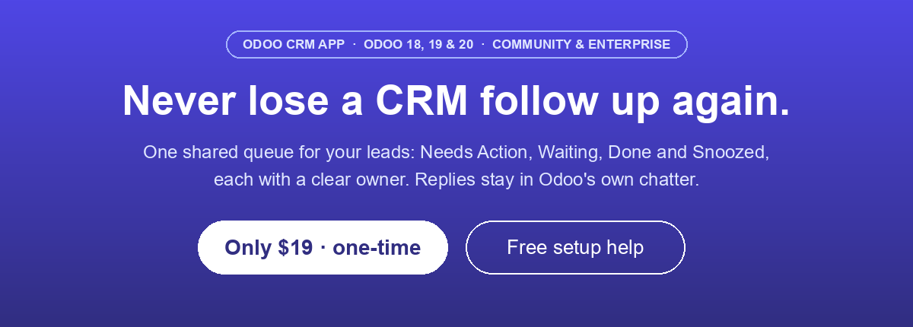
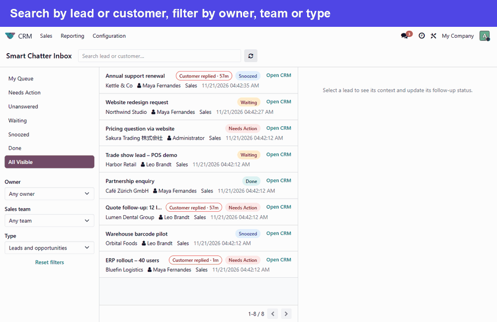
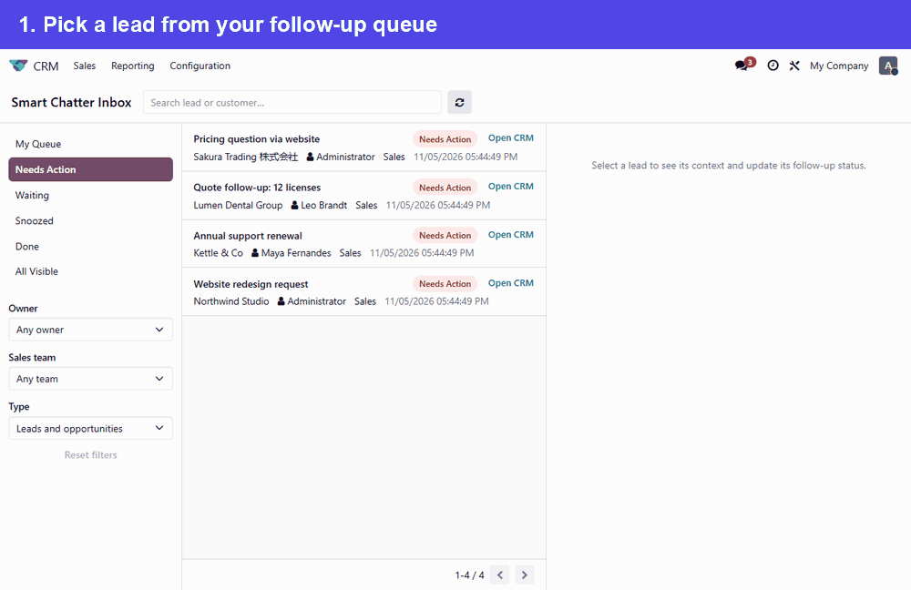
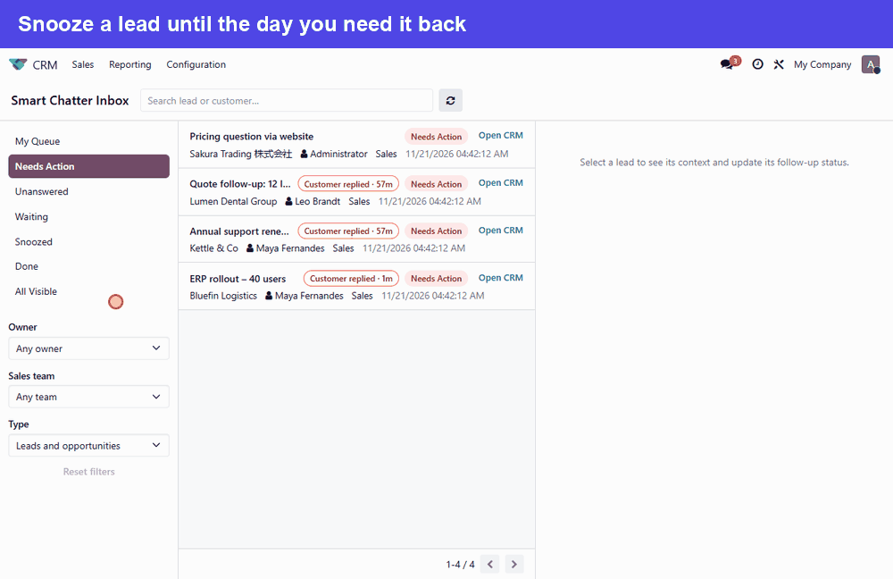
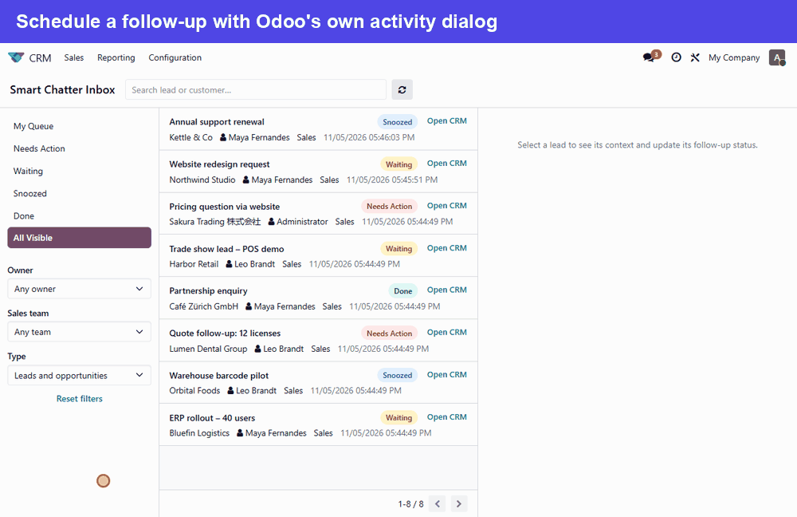
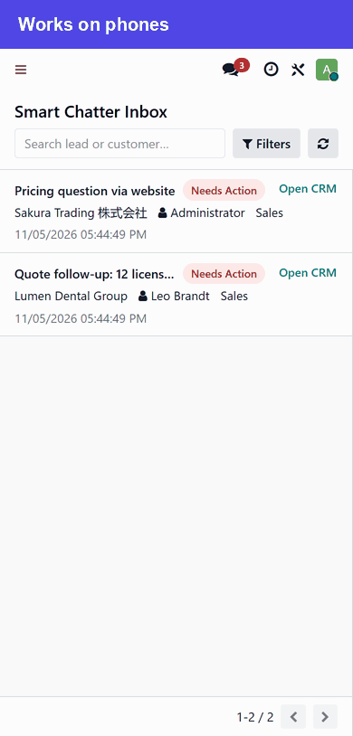
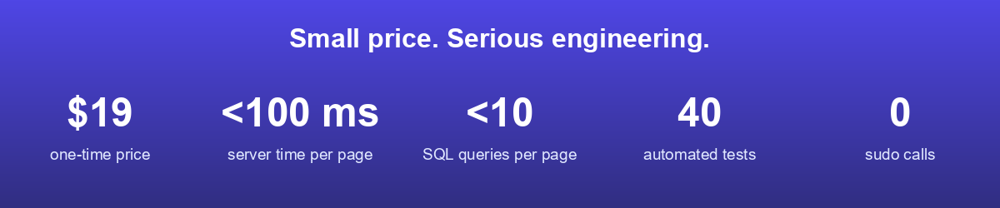
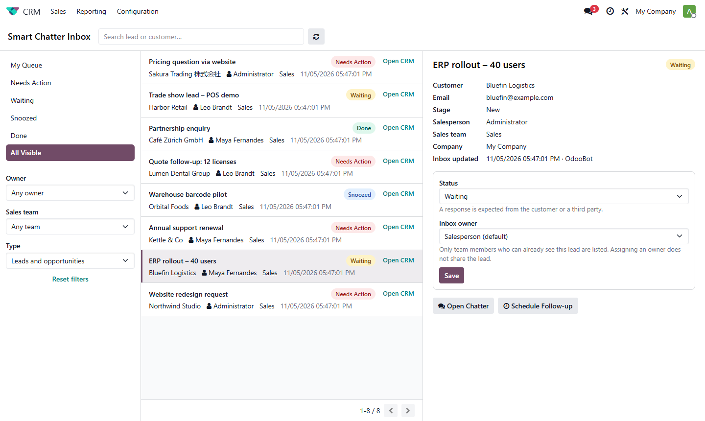
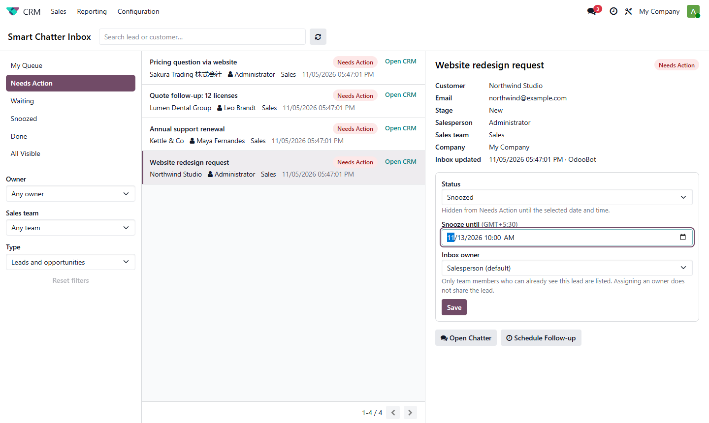
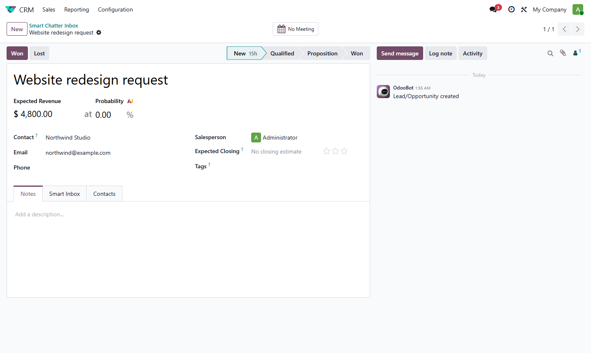

One follow up queue for your whole sales team. See which leads need a reply from you, which are waiting for the customer, snooze a lead until the day you need it, and assign a follow up owner. Works inside Odoo CRM.

✓ Odoo 18, 19 & 20 ✓ Community & Enterprise ✓ Odoo.sh & self-hosted ✓ Multi-company ✓ Phone & tablet layout ✓ No external services
Any sales team that follows up leads and customers from Odoo CRM.
👥
Everyone sees which leads are waiting on us and which are waiting on the customer. No more "did anyone reply to this?"
📊
Filter by owner, team or company to spot stuck conversations in seconds, then hand them to the right person.
🏢
A shared sales inbox for lead follow up without a help-desk subscription. Install, tick one setting, done. $19, once.
LIVE DEMOS
Recorded in a real Odoo database. No mock-ups.
1 · TRIAGE
Select a lead, choose Waiting, pick a team-mate as follow up owner and save. It moves out of Needs Action straight away.

2 · SNOOZE
Pick a date and time in your own time zone. When it is due, the lead returns to Needs Action by itself. No scheduled job to configure.

3 · ACT
Schedule Follow-up opens Odoo's own activity dialog. Open Chatter takes you to the lead, where you reply exactly as you do today.

4 · ON THE GO
Three panes on desktop, a filter drawer on tablets, and a simple list-then-details flow on phones. Clear your queue from anywhere.

01
Install the app next to CRM. The admin user gets access automatically; add other users from Settings › Users.
02
Turn on Include untriaged leads in CRM Settings, or set a status on the Smart Inbox tab of any lead.
03
Open CRM › Sales › Smart Chatter Inbox and work from Needs Action down to zero.
Nothing it doesn't.
Needs Action, Waiting, Done and Snoozed, plus quick views for My Queue and All Visible.
Hand a lead to a team-mate without changing the salesperson. Only people who can already see the lead are offered.
Snooze to a date and time in the user's time zone. Leads come back on their own, with no cron job.
Customer, email, phone, stage, salesperson, team, next activity and who last updated the status.
Schedule Follow-up uses Odoo's standard activity dialog, so reminders, calendars and reports keep working.
A Smart Inbox tab on every lead lets you triage it without leaving the form.
Arrow keys move through the list, focus is always visible, and screen readers get proper labels.
Only companies enabled in the company switcher are shown, and the company filter respects them.
No changes to existing leads on install. Uninstalling removes the app's fields and leaves your CRM data untouched.

Measured on a test database with 10,000 opportunities and 100,000 chatter messages (server-side, p95).
SECURITY & GOVERNANCE
Every list, count, filter and update runs as the logged-in user with your normal access rights and record rules. The app has no superuser shortcuts, so a salesperson who can only see their own leads sees only their own leads here too.
| Question your team asks | Standard Odoo CRM | With this app |
|---|---|---|
| Which conversations are waiting on us? | Open each lead | ✓ Needs Action list |
| Which ones are waiting on the customer? | Not tracked | ✓ Waiting list |
| Who is following this up? | Salesperson only | ✓ Separate follow up owner |
| Hide it until next Tuesday at 10:00? | ✗ | ✓ Snooze |
| One screen for the whole team's queue? | ✗ | ✓ Shared inbox with filters |
| Change how we email customers? | — | No change needed |
Filters, queue and lead details in one screen

Snooze editor with the user's time zone

Open Chatter goes straight to the lead

Looking for something else by name? Teams use this app as a sales follow up tracker, lead follow up reminder, CRM to-do list, shared sales inbox, lead snooze, follow up management and CRM activity queue for Odoo 18, 19 and 20, Community and Enterprise.
Does it read or send emails?
No. It does not connect to Gmail, Outlook or IMAP and sends nothing. Your team replies in the lead's chatter exactly as before. The statuses are your team's own workflow; the app does not guess whether an email was answered.
Why is my inbox empty after installing?
Installing changes none of your existing leads. Turn on Include untriaged leads in CRM Settings to show every open lead, or set a status on a lead's Smart Inbox tab.
Who can use it?
Users in the Smart Chatter Inbox / User group. The admin user gets it on install. They still only see the leads their CRM access allows.
Does it work on Odoo Online?
Odoo Online (SaaS) cannot install third-party apps. It works on Odoo.sh and on any self-hosted Odoo 18, 19 or 20, Community or Enterprise.
Will it slow down CRM?
No. Pages are capped at 100 rows and load in a fixed number of queries. On 10,000 leads every call stayed under 100 ms on the server. It never loads chatter messages for the list.
Is there a message preview?
Not in this version. Click Open Chatter to read the conversation on the lead.
Questions before buying, trouble installing, or an idea for the next version? Email us and we usually answer within one business day.
✉ rahul@softdeviser.com softdeviser.comCRM Follow Up Inbox (Smart Chatter Inbox) by Softdeviser · Odoo Proprietary License v1.0